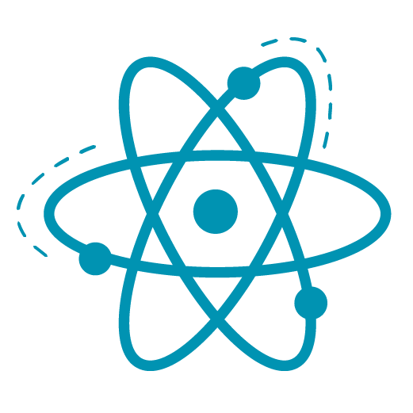
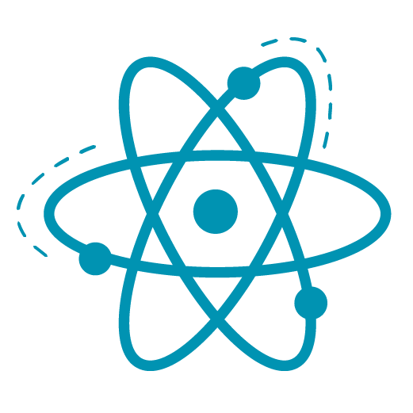
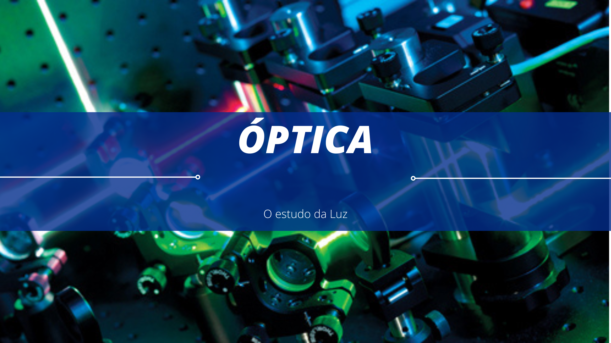

O que estuda a Óptica?
A óptica é a parte da Física responsável pelo estudo dos fenômenos associados à luz.
Os estudos de Óptica são divididos em duas partes:
1. Óptica geométrica: parte da Óptica que estuda a propagação da luz por meio dos raios de luz. Os fenômenos que essa área abrange são: propagação retilínea da luz, reflexão e refração da luz, espelhos e lentes;
2. Óptica física: estuda o comportamento ondulatório da luz. Os fenômenos estudados por essa área são: emissão, composição, absorção, polarização, interferência e difração da luz.

Abaixo temos os links de alguns temas que são abordados no estudo da óptica. Inicie seus estudos através dos fundamentos da óptica geométrica.